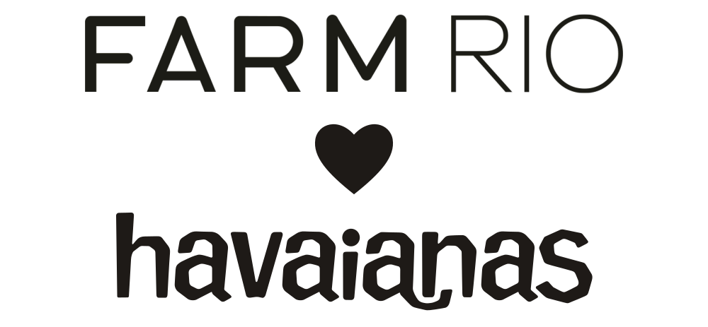
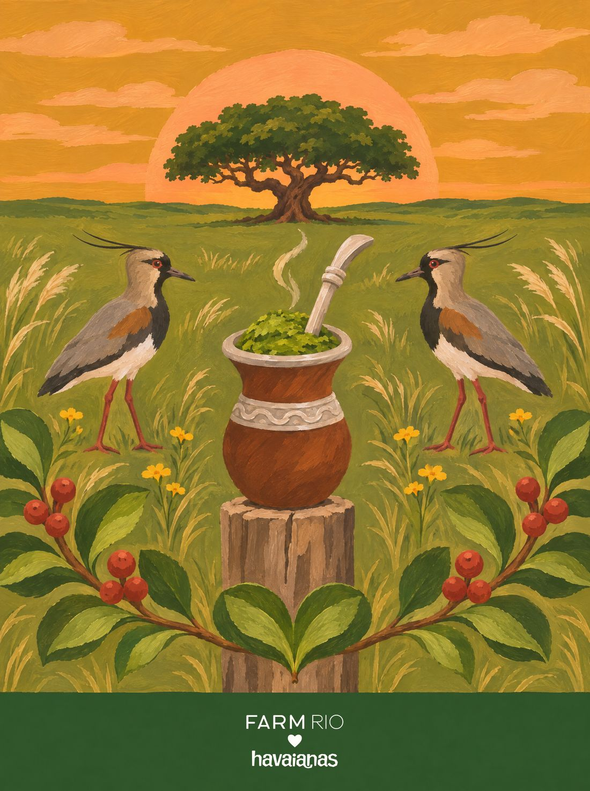

identidade
Uma marca que não é nova
A V2 não ganha logo próprio: a assinatura é a da collab. O que a cápsula ganha é um emblema, como a FARM fez com a flor exclusiva da adidas FW23.

A assinatura da collab
FARM Rio, o coração e havaianas, empilhados e centralizados no calcanhar, exatamente como já vai na palmilha da collab. A cor acompanha o fundo de cada estampa, tom sobre tom.
Os logos oficiais não ganham textura nem distorção. Quando passam por cima de um elemento, levam só um fio fino na cor do fundo para continuar legíveis.
bem-querer
o emblema da cápsula · duas folhas de amendoeira que caem juntas
Por que duas folhas
É a regra da coleção virando símbolo: o coração nunca é desenhado, ele é formado pelos elementos. A folha é de amendoeira, a árvore das calçadas do Rio, porque a viagem sai do Rio. No outono carioca ela fica vermelha e laranja, e essas viraram as cores da marca.
Como ele muda
Na campanha, o símbolo muda de estado: em cada um, o coração é o que se esconde na estampa de lá. Duas folhas de aguapé no Mato Grosso do Sul, dois pássaros de miriti no Pará, a cauda da baleia em Santa Catarina.
Aa
Instrument Serif · títulos e emblema
Uma serifa fina e alta, que fica elegante grande e conversa com a letra das revistas de moda. Itálico para os nomes das estampas.
Aa
Jost · texto, etiqueta e linha da cápsula
Geométrica como o FARM RIO do logo da collab, para o texto não brigar com a assinatura. As duas são livres, do Google Fonts.
cores
#F4EDE3
#6A1B29
#E07A2E
e uma paleta por estado, tirada da própria estampa
